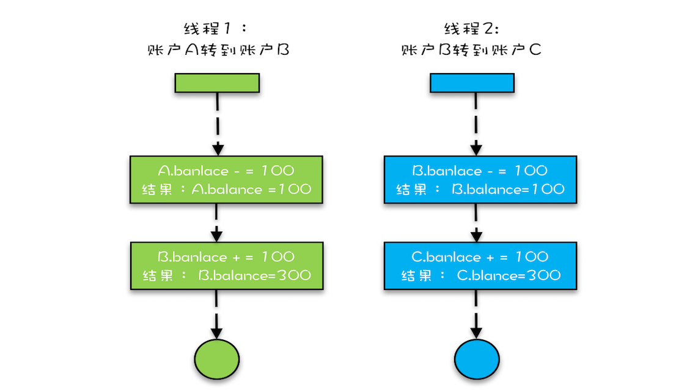

锁的作用，解决原子性问题
例如：32位处理器在并发修改一个long类型的数据为什么是不安全的，原因是long类型是64位的数据在32位处理器中分为高32位和低32位，当2个线程同时修改一个long类型的高32位和低32位时候可能就会引起数据不一致的情况。解决方案是，给这个数据加锁，同时只允许一个线程对他进行修改。java中就是利用synchroized关键字。锁模型如下

synchroized关键字的几种用法
synchroized有3种使用方法分别是锁static方法，锁实例方法，锁方法块，如下：
分别表示：
- 修饰静态方法锁类的class对象，当这个静态方法被调用时候，该类所有的加锁的静态方法都会被锁住。
- 修饰实例方法，锁当前方法实例化的对象，其他线程对该对象的所有synchronized方法都会被锁住，以及该对象涉及锁住的代码块
- 代码块锁对象，该对象修饰的其他的代码块、以及该对象的synchronized都会被锁住。
1 | class X { |
锁和被锁资源的关系
被锁资源和锁的关系应该是N：1关系，即一个资源只能对应一个锁。如下就是错误的且实际编程会经常发生
1 | class SafeCalc { |
注意HB原则要切实锁住对象
下图的方法是错误的，因为hb原则没有规定get和addOne不适用于任何一条hb原则，所以当并发开始后，有可能get会出现数据不一致情况。解决方法：
- get加synchronized关键字:当并发发生后，解锁hb于加锁，所以后面的方法对前面方法一定可见
- 将value设置为volatile：并发发生volitile写hb于读，所以addOne之后get一定可见
1 | class SafeCalc { |
如何一把锁保护多个资源
因为被锁的资源和锁之间关系是N:1的关系，那么如何用一把锁保护多个资源呢
如何保护没有关联关系的锁
如下，对于账户里面的余额和密码，我们采用了俩把锁balLock和pwLock分别保护俩个资源，同时也可用一把锁同时保护俩个资源，即给所有的方法加synchroinzed关键字，但是这样锁的粒度较大性能不如前一种好，因为一个修改余额的操作可能会影响到密码相关的操作。
1 | class Account { |
如何保护有关联关系的资源
例如上面提到的Account对象要提供转账方法，很直观的想法是给transfer方法加锁。如下所示，但是这个方法只是看似正确。因为synchronized方法修饰的调用方法的实例即this对象，并不能锁住target对象。
因为在高并发情况下。如果target也向对方转账，是无法保证taget数据的一致性的。如：a–>b 100元,同时另一个线程b–>c100元.如图：

1 | class Account { |
解决方案是transfer中的代码块用同一把锁锁住，最好的方法是用Account.class，因为jvm虚拟机所有线程只会加载一个Account对象
注意不能将不可变对象置为锁
因为不可变对象的值一旦发生改变，锁就会失效
锁的优化以及如何规避死锁问题
如上所述，对于转账这个场景给Account.class加锁，虽然并发问题是解决了，但是系统中所有的转账都会变成串行的操作，在现实系统中该方法完全不可用。我们可以采用细粒度的方法对程序进行优化。
1 | class Account { |
这个方法是同时锁住转入账户和转出账户，并发问题解决了但是引入了另一个问题，即并发编程最臭名昭著的“死锁”，为什么会发生死锁呢。设想如下场景：
线程T1里a要向b转账，同时线程T2里b也要向a转账，这时候T1拿到了a的锁synchronized(this),同时T2拿到了b的锁synchronized(this)，下一步T1和T2因为synchronized(target)同时等待对方释放锁。这时候就进入死了死锁。那么死锁的条件是什么呢？
- 互斥：即代码中的target和this俩个线程互斥。
- 占有且等待：即T1synchronized(this)占有资源且等待target。
- 不释放：T1不会主动释放锁的资源。
循环等待：上文中说的互相等待。
那么如何避免死锁呢打破上述的任何一个条件即可。互斥我们是无法打破的我们看下剩下3个条件如何打破。
打破：占有且等待
我们针对“等待”俩个字，让锁一下获得所有的资源。具体方式，我们可以创建一个Allocator方法提供apply申请资源和free释放资源的方法。注意Allocator一定是单例，在锁保证全局唯一，代码如下
1 | public class Allocator { |
打破：不释放
即主动释放资源，但是java的synchronized关键字因为在出现竞争时候线程会进入阻塞状态，本身是没有这个功能可以用Lock替代
打破：循环等待
这个其实很简单，我们给每个账号上分配一个id,对这个id排序，加锁按照id的顺序加锁，保证每个线程的加锁顺序一样。
1 | public class Account { |